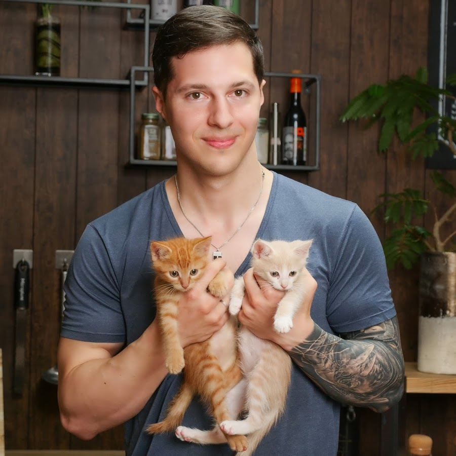

近年日本でも広がり始めているベジタリアンについてたっぷりご紹介します！こちらは世界のベジタリアン人口です。ちなみに私もベジタリアンになったので日本の9%に入っています。
ベジタリアンには色んな種類があるんだよ
| 肉 | 魚 | 卵 | 乳 | |
|---|---|---|---|---|
| オヴォ・ラクト・ベジタリアン | × | × | ◯ | ◯ |
| オヴォ・ベジタリアン | × | × | ◯ | × |
| ラクト・ベジタリアン | × | × | × | ◯ |
ベジタリアンについてまだまだ理解が進んでいないと感じています。そのため、わかりやすく、ベジタリアンの魅力を知れるコンテンツの紹介をします！
海月ダンテさん
アメリカ出身でYoutubeをとしてヴィーガンについて広めている。沖縄で料理人としても活動し、ヴィーガン男子という愛称で親しまれている。
映画 「Cowspiracy: サステイナビリティ（持続可能性）の秘密」
環境保護活動を始めた一人の男性が、色々と調べていくうちに、実は環境汚染問題も、食物問題も、全ての原因に最も強く関わってるのが「畜産業」である事を突き止めてしまう所から、映画は始まる。2015年に「Netflix」での公開が始まってから、世界各国で異常な反響を呼んでる作品だ。